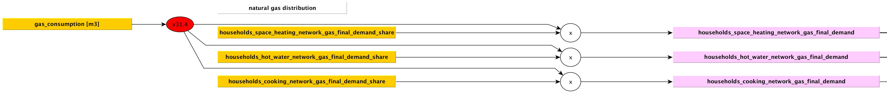
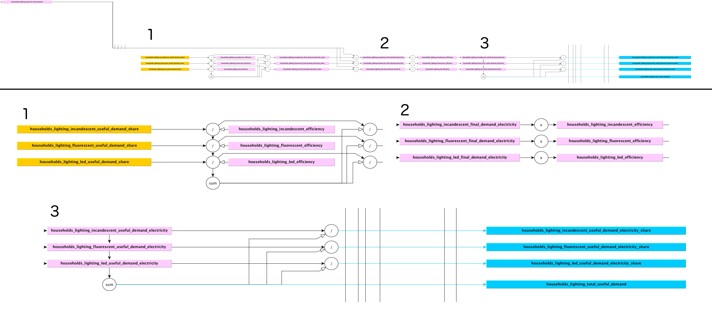

class: center, middle # ETLocal ## Sprint meeting --- # Agenda 1. Overview 2. What did we do the previous sprint? 3. What didn't we do? 4. What are we going to do? --- # Overview: <img src="images/27.png" width="100%"/> --- # What did we do the previous sprint? <img src="images/28.png" width="20%"/> <img src="images/29.png" width="60%"/> --- <img src="images/30.png" width="100%"/> --- <img src="images/31.png" width="100%"/> --- <img src="images/32.png" width="100%"/> --- # (Updated) schematic households analysis <img src="images/33.png" width="70%"/> --- # Schematic households analysis  --- # Schematic households analysis  --- # To summarize - Made it possible to download a dataset as a full zip file - Restructured the interface (again) - Finalized schematic of the households analysis - Various discussions led to finalized households analysis --- # What didn't we do? - Implement a full households analysis, buildings analysis - Excel analysis incomplete - To complex --- # Project deliverables + preliminary planning <table cellpadding='4' border='1' style="border-collapse: collapse;"> <tbody> <tr> <td> <td>Households</td> <td>Buildings</td> <td>Industry</td> <td>Agriculture + Other</td> <td>Supply</td> <td>Transport</td> </tr> <tr> <td>Excel</td> <td>0</td> <td>0~</td> <td>0?</td> <td>0?</td> <td>0?</td> <td>0?</td> </tr> <tr> <td>Discussion</td> <td>0</td> <td>1</td> <td>1</td> <td>1</td> <td>1</td> <td>1</td> </tr> <tr> <td>Schematic</td> <td>3</td> <td>3</td> <td>3</td> <td>3</td> <td>3</td> <td>3</td> </tr> <tr> <td>Code design</td> <td>3</td> <td>1</td> <td>1</td> <td>1</td> <td>1</td> <td>1</td> </tr> <tr> <td>Discussion code design</td> <td>2</td> <td>0</td> <td>1</td> <td>0</td> <td>1</td> <td>1</td> </tr> <tr> <td>Code implementation</td> <td>3</td> <td>2</td> <td>2</td> <td>2</td> <td>2</td> <td>2</td> </tr> <tr> <td>Merging</td> <td>0.5</td> <td>0.5</td> <td>0.5</td> <td>0.5</td> <td>0.5</td> <td>0.5</td> </tr> <tr> <td>Bugs</td> <td>1</td> <td>1</td> <td>1</td> <td>1</td> <td>1</td> <td>1</td> </tr> </tbody> <tfoot> <tr> <td>Total</td> <td>12.5</td> <td>8.5</td> <td>9.5</td> <td>8.5</td> <td>9.5</td> <td>9.5</td> </tr> </tfoot> </table> --- # What are we going to do? **Etlocal:** - Households analysis - Technical design (3 days) - Actual implementation (3 days) [ Tijd schatting aanpassen ]